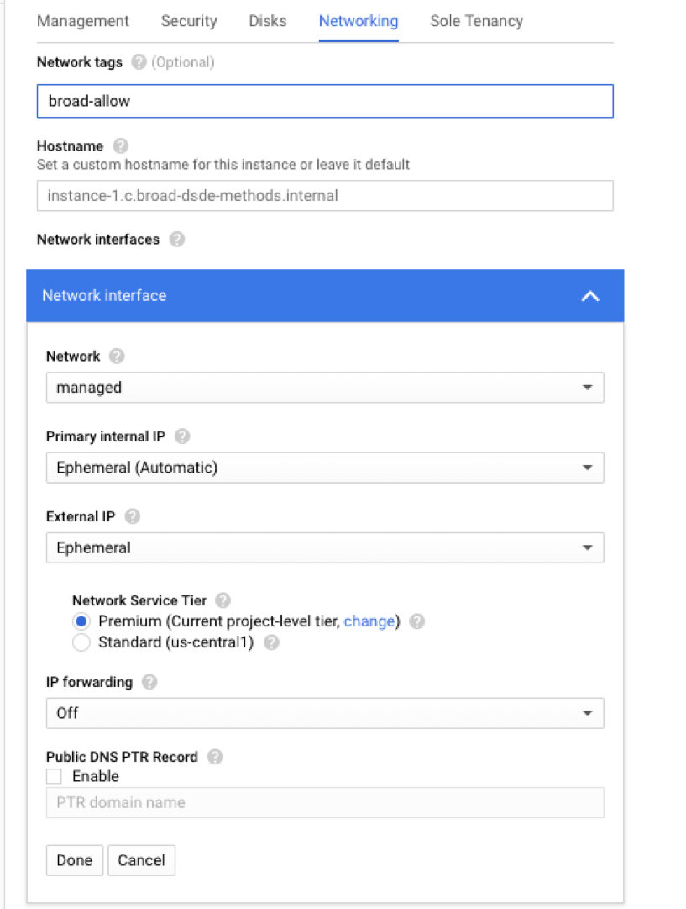

These are some best practices and recommendations for managing your GCP projects.
Basic security tasks:
Embrace Google’s pre-built
environments
Secure your Databases (cloudsql)
Basic security tasks:
Make sure your gcloud command line tool is up to date and latest. It changes often.
Embrace Google’s pre-built environments
- Google App Engine (GAE) - If you’re running a web-based application, this is a good place to start
- Google Kubernetes Engine (GKE) - If you’re running a bunch of different applications that have been or will be dockerized, this is a good place to start
- Google Cloud Functions (GCF) - Serverless applications based on events from Google like “web request” or “new file in bucket”
- Try not to use GCE unless absolutely necessary -- there’s more to manage with security.
Code Protection
- Google is API and code-driven. Most of this code goes to github or something similar. People commit keys to github by accident and if the keys are public, that’s a problem.
- https://github.com/awslabs/git-secrets - install this to keep keys out of code
- Use Protected Branches to make sure someone reviews code to double-check.
- If you MUST put secrets in code, encrypt them first with Google KMS
and make that key accessible only to certain Google Service
Accounts.
- https://github.com/GoogleCloudPlatform/berglas is a good way to handle it.
Secure the network
Disable the default tcp:22 and default tcp:3389 firewall rules which allows SSH and RDP access to all VMs on the default network. Also, deploy all your machines on a non-default network that does not include those rules.
Example: gcloud compute firewall-rules delete default-allow-ssh default-allow-rdp --project my-project-name
You might want to delete the “default” network (optional).
i.
gcloud compute networks delete defaultCreate a managed network and subnet -- allow only Broad Networks to access.
i.
gcloud compute networks create managed- “managed” here is the name of the network you’re making. Use anything you want.
ii.
gcloud compute networks subnets create managed-subnet --network=managed --enable-flow-logs --range=10.100.1.0/24- Note, your range might vary depending on what you want.
- “Managed-subnet” can be any word you want. We named it this because it’s a “subnet” of the network called “managed”. We encourage something similar.
- You might want to talk to bits if you want to create an absolutely unique --range.
iii.
gcloud --project <project> --account <user> compute firewall-rules create managed-allow-<name> --allow=tcp:<port> --target-tags broad-allow --network=managed --source-ranges=69.173.112.0/21,69.173.127.232/29,69.173.127.128/26,69.173.127.0/25,69.173.127.240/28,69.173.127.224/30,69.173.127.230/31,69.173.120.0/22,69.173.127.228/32,69.173.126.0/24,69.173.96.0/20,69.173.64.0/19,69.173.127.192/27,69.173.124.0/23 --enable-logging- There is a chance this command is slightly different depending on the exact version of gcloud you have.
- “managed-allow-” can be anything you want. I encourage having the first part (managed) as the name of your network.
- The “tcp:port” can be a comma separated list of tcp ports or a
range that you’re opening to specific targets.
- You can put 0-60000 if you want all ports
- Anytime you want to open a port, alter this rule, don’t
create a new one.
- You can totally create a new rule, but be REALLY mindful of it.
- “--target-tag broad-allow” means that any machine with
“broad-allow” tag on it will be accessible on all ports on
Broad Networks only.
- Use other tags when you create firewall rules of your own.
iv.
That above command will enable all Broad users on VPN or at
a Broad office to contact all machines in the “managed” network but be blocked to the rest of the world.Look at the docs for Firewall rules to see more on how to
open your machines to the outside world or how to narrow to a set of machines (“targets”).
Secure your Databases (cloudsql)
- Make sure all databases are blocked to the outside world (default)
- Use SQL Proxy to ensure protected connections
- ONLY ALLOW SSL CONNECTIONS!
IAM
- IAM (Identity and Access Management)
- Use an approach of “least privilege” where users are granted
only the permissions necessary to perform the tasks they need to
perform.
- Avoid giving Owner-level permissions if possible OR project-level permissions (like editor).
- If using Service Accounts, the keys generated should be kept in a VERY safe place, preferably Broad’s “Vault” and rotated at least yearly.
- Use an approach of “least privilege” where users are granted
only the permissions necessary to perform the tasks they need to
perform.
Secure GCE
- Use a managed network with a subnet!
- Use a tag to manage which FW rule has access to the machine!
- 
Use either
CIS Hardened Images:
https://www.cisecurity.org/cis-hardened-images/google/Use Shielded VMs: https://cloud.google.com/shielded-vm/
Only use Google’s IAM for SSH access.
Give users “compute” access to specific Subnets as opposed to the whole project via Google IAM:
https://cloud.google.com/compute/docs/instances/managing-instance-accesshttps://cloud.google.com/compute/docs/access/granting-access-to-resources
Example of granting access for a user to SSH to machines in a
specific subnet:gcloud compute subnetwork add-iam-policy <subnetwork name> \\ | --member='user:user@gmail.com' \\ | --role='roles/compute.instanceAdmin.v1
Your VM should have some things on (required only if your VM has access to Production data):
- Make sure auto-update of security patches is on:
- (advanced) Logs should go somewhere (required only if your VM has
access to Production data)
- VM logs should use StackDriver and go out to there.
- https://cloud.google.com/logging/docs/agent/installation
- By default, it picks up system logs
- For applications: application can write to a file that gets picked up by Stackdriver (like /var/log/applicationname) via the fluentd agent
- See BITS about having traffic of logs go to SIEM.
- By default all “Google” logs already go to SIEM - -this is just for the application/OS.
- VM logs should use StackDriver and go out to there.
GKE (TODO)
Docker Security
Use the “secure” Docker base images:
https://cloud.google.com/container-registry/docs/managed-base-imageshttps://cloud.google.com/container-registry/docs/get-image-vulnerabilities scan your images and respond to that regularly.
- Feel free to put your images in any supported repository but ALSO put it in GCR to take advantage of this.